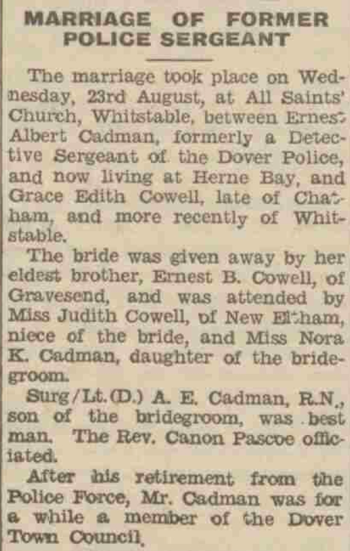
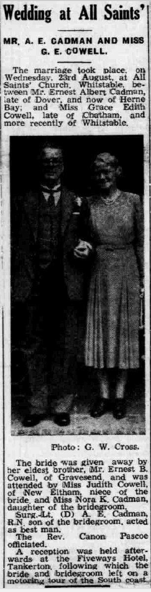
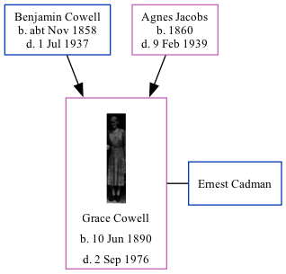

Grace Edith Cadman (née Cowell) 1890 - 1976
[ Home ] | [ Calendar ] | [ Surnames Index ] | [ Family History ]A cashier and the daughter of Benjamin Cowell (a woolen warehouse foreman) and Agnes Jacobs, Grace Cowell, the third cousin twice-removed on the mother's side of <a href="I1.html">Nigel Horne</a>, was born in Chatham, Kent, England on Jun 10, 1890<span class="citation">1</span>. She married Ernest Cadman (a police sergeant and member of the dover town council) at All Saints Church, Whitstable, Kent, England on Aug 23, 1950<span class="citation">4</span>.</p><p>Grace spent all of her life in Kent, England. Throughout her life, she lived in several places around the county: at 5 Hope Street in Chatham on Apr 5, 1891<span class="citation">5</span> and on Mar 31, 1901<span class="citation">6</span>; on 157 Glencoe Road in Chatham on Apr 2, 1911<span class="citation">7</span> and on Jun 19, 1921<span class="citation">1</span> (when she was living with her parents); at 38 Greensted Farm, High Street in Whitstable on Sep 29, 1939<span class="citation">8</span>; and at 37 Coventry Gdns, Beltinge on Sep 2, 1976. Grace In 1921 she was working at Grocery & C Assistant.<p>She died on Sep 2, 1976 in Canterbury, Kent<span class="citation">2,3</span>.
Parents
- Benjamin William was born c. Nov 1858
- Agnes Sarah was born in 1860
Citations
- 1921 Census Of England & Wales - Findmypast (was age 21 and the daughter of the head of the household)
- England & Wales Government Probate Death Index 1858-2019 - Findmypast
- England & Wales deaths 1837-2007 - Findmypast
- England & Wales Marriages 1837-2005 - Findmypast
- 1891 England, Wales & Scotland Census - Findmypast (was age 0 and the daughter of the head of the household)
- 1901 England, Wales & Scotland Census - Findmypast (was age 10 and the daughter of the head of the household)
- 1911 Census for England & Wales - Findmypast (was age 20 and the daughter of the head of the household)
- 1939 Register - Findmypast (was recorded at this address)
Media
Dover Express 08 September 1950

Whitstable Times and Herne Bay Herald 09 September 1950

Grace Edith Cowell

England & Wales births 1837-2006 - BMD/B/1890/3/AZ/000126/104
1939 Register - TNA/R39/1798/1798I/019/01
England & Wales deaths 1837-2007 - BMD/D/1976/3/AZ/000152/043
England & Wales marriages 1837-2005 - BMD/M/1950/3/AO/000348/011
England & Wales Government Probate Death Index 1858-2019 - GBOR/GOVPROBATE/C/1976-1976/00034219
Family Tree
Generated by Ged2Site. Last updated on Jul 20, 2025